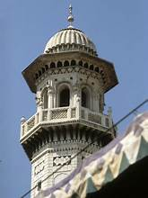

An iconic 17th-century mosque located in Peshawar, Khyber Pakhtunkhwa, Pakistan.
Mahabat Khan Mosque is one of the most famous historical mosques in Peshawar. Built in 1630 during the reign of Mughal Emperor Shah Jahan, it is located near the famous Qissa Khwani Bazaar. The mosque is known for its exquisite Mughal architecture, large courtyard, and impressive minarets.
The mosque has served as a place of worship for centuries and remains a significant cultural and architectural landmark in the city.
The mosque is built from white marble and red sandstone, featuring Mughal-style domes, minarets, and arches. It has a large prayer hall capable of accommodating thousands of worshippers and a central courtyard. The mosque's intricate frescoes and ornamental designs showcase the artistic skill of Mughal craftsmen.
